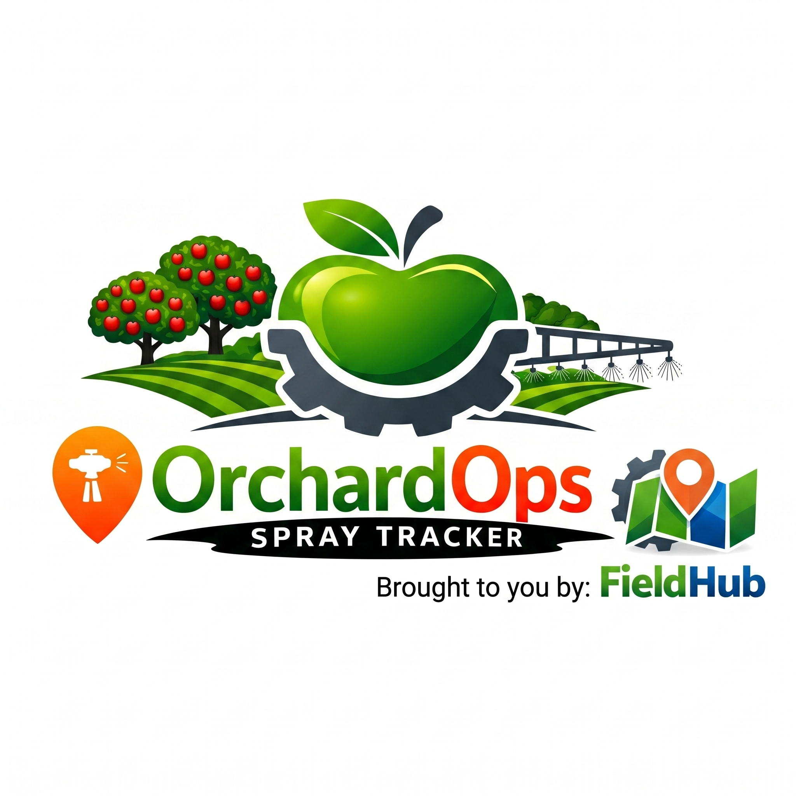

OrchardOps helps farmers easily log spray applications, record weather conditions, and track field activity with accurate GPS mapping.
The app supports both online and offline use, automatically syncing your data when a connection becomes available.
For help or support, contact:
support@FieldHub.uk